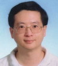

照片來源：高科大電通系網站指導教授
吳介騫副教授
國立高雄科技大學 電腦與通訊工程系・F459 實驗室
- 最高學歷
- 美國南加州大學 電機工程博士
- 專長
- 資安實務、行動通訊、光纖網路
本專案研究方向
以衛星導航訊號合成、軟體定義無線電及無人機飛行管制為本專案研究主軸，指導團隊整合導航模擬、通訊系統實作與實驗驗證。
THE PEOPLE BEHIND THE SIGNAL · 研究團隊
以研究為核心，
讓探索一屆一屆傳下去。
GeoTrust 由國立高雄科技大學電腦與通訊工程系 F459 實驗室發展，在吳介騫副教授指導下，跨 113、114、115 三屆接力完成。
01 · 指導教授

照片來源：高科大電通系網站指導教授
國立高雄科技大學 電腦與通訊工程系・F459 實驗室
以衛星導航訊號合成、軟體定義無線電及無人機飛行管制為本專案研究主軸，指導團隊整合導航模擬、通訊系統實作與實驗驗證。
02 · 團隊成員
一屆打底，一屆加速，一屆整合驗證。
每一位成員的工作，都對應到專案總覽裡的某一章。
製作與開發
此網頁由 En 全權主導製作開發。
意見校正
由 Money 進行意見校正。